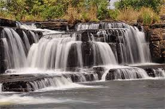
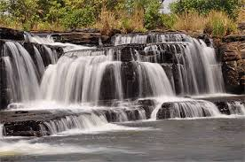

Description
Les Cascades de Karfiguéla (ou Cascades de Banfora) : C'est le site le plus emblématique de la région. Ces magnifiques chutes d'eau en cascade offrent un cadre idyllique pour la baignade, la détente et la photographie, surtout après la saison des pluies.
Historique
Les cascades de Karfiguéla ou cascades de Banfora sont une série de cascades le long du fleuve Comoé au sud-ouest du Burkina Faso. Elles sont situées à environ 12 km au nord-ouest de Banfora et constituent l’un des sites touristiques les plus importants au Burkina Faso. La région des Cascades tire son nom de ces cascades. Dans la chaleur de ce mois de mai, entendre le son de l’eau qui coule au loin est en soi une délivrance. Une dizaine de baignoires naturelles et de bains à remous remplis d’une eau limpide et glacée vous y attendent.
Galerie photos
 
